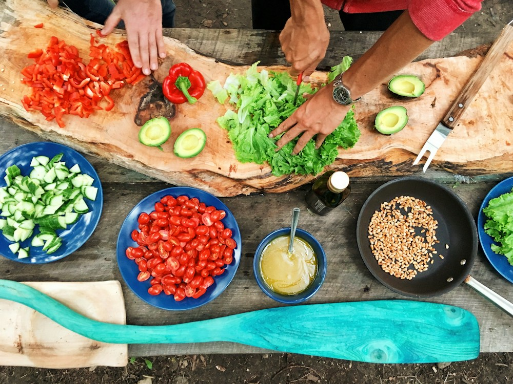

Cooking
A chance to make something with my hands, explore flavors, and enjoy a good meal.
A little about me
Cooking, jogging, and working. Three things I enjoy, and a little window into my everyday life.
Get to know me
Photo by Maarten van den Heuvel / Unsplash
Meet Joy
I like making time for the things I enjoy: cooking something good, heading out for a jog, and getting stuck into my work. Welcome to my little corner of the web.
In the kitchen. On the move. At work.
A chance to make something with my hands, explore flavors, and enjoy a good meal.
Time to get outside, find my rhythm, and take the day one step at a time.
I enjoy keeping busy, putting care into what I do, and the satisfaction of making progress.
That's a little about me
Thanks for stopping by.